Сказание о Тальце
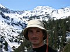
В славном городе Слюдянке жил-был богатырь Алексей из знатного рода Белокрыловых. И решил он однажды собрать друзей своих для великого похода в тридевятое царство, заснеженное Тальцинское государство, дабы познать радость майского фрирайда. И вот съехались друзья со всех концов света, Косма Умелый, Андрей Благородный, Ксения Краса, Ульянка Рукодельница, Татьяна Златокудрая и Марина Сдредами, да и отправились в путешествие. Шли они долго полями, лесами, ручьями и, наконец, дошли. Но там поджидала их печаль великая, славный богатырь Алексей, должен был возвратиться назад для исполнения дел важных. И ознакомил он тогда друзей своих с порядками и нравами далекого края, показал где, чё зарыто и где, чё катать надо, да наказал строго-настрого, мол: «Отдыхайте, веселитесь, да смотрите аккуратнее никуда не лезьте», на том и распрощались.
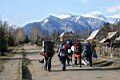
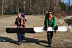
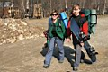
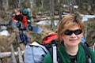
Друзья посидели, погоревали немного, затем чайку попили с макаронами и сосисками, повеселели, и сразу отдыхать отправились в гору со сноубордами. Шли они, шли и увидали поля некатаные. И вот со словами: «Ща, все тут закатаем и западаем», закатали все и западали. Особенно похвально выполняла план гениальнейший Ульянка Рукодельница. И вот славно повеселившись, друзья покатили в лагерь, но дорога была нелегкой, и силушки оставили Татьяну Златокудрую, да урылась она и вывихнула руку.
И прибыли они в лагерь. Да все, вроде, было хорошо. Но появился соседушка хитрый – Паня и предложил помериться силами с супер-трамплином. Долго боролись с трампом корявым Косма Умелый и Марина Сдредами, лишь дреды в снегу мелькали. Да вот только ранен был Косма Умелый в том неравном бою в правую руку, и напала на него печаль невиданная.
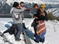
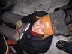
Время клонилось к вечеру, Косма Умелый, несмотря на ранение страшное, организовал домашний очаг и дровец. Девицы накрыли скатерть самобранку. И все бы хорошо, но и тут подстерегла их беда-бедушка. Наповадились к их костру соседи пачками ходить, шуметь и газовые баллоны взрывать. Устали бороться с ними друзья и порешили, спать пойти, утро вечера мудренее…
Проснулись друзья рано, на зависть всем соседям, часов в 11. На улице солнышко ясное, на столе овсянка питательная и вкусняшки заморские. И только одна новость огорчила утро – Ульянка Рукодельница решила отправиться обратно в город учиться уму-разуму, готовиться к защите диплома. Попрощавшись с ней и оставив раненую Татьяну Златокудрую в лагере покорять ближайшие склоны, друзья отправились на поиски полей некатаных.
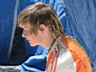
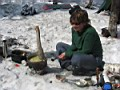
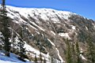
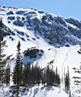
Солнце жарило беспощадно. Снег ослеплял. Друзья не сдавались. Путь был далек и опасен и, посовещавшись, решили они оставить Андрея Благородного защищать тылы слабые, абы никакая душа не испортила плана гениального закатать тот, а может тот кулуар. И вот следуя верной путь-дорожке, Косма Умелый, Марина Сдредами и Ксения Краса оказались на заветной вершине Тальцинского. И окружала их красота неземная. И действие чудо-овсянки еще не отпустило. И порешили, они пройти левее и катить вниз. Так и сделали.
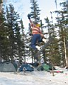
Вертикальная стена, уходящий из под досок снег, наводили страх и вспенивали адреналин. Дух захватывало, штаны намокали, но друзья не сдавались, они катили и катили. И вернувшись в лагерь после путешествия опаснейшего, девицы еще долго пребывали тупо в шоке.
Вечерело. Каждый занялся своим делом. Косма Умелый – все по хозяйству хлопотал, Татьяна Златокудрая и Андрей Благородный продолжали катать, Ксения Краса навестила стоянку друзей-знакомых, Марина Сдредами подсыпала прошловыходной трамплин и веселила честной народ своим «Мясо-шоу».
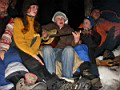
А когда стемнело, друзья, наслаждаясь костром, курицей с ананасами, шашлыками, вермутом и глинтвейном, принимая мирных гостей Александра Ангарского, Паню Хитрого и Светлану Иркутскую, мечтали о гитаре. И через некоторое время их мечта сбылась. Заглянули на огонек друзья-товарищи. Костя Доктор играл, Ксенья Шультайская пела. Сигал Великий отблагодарил ананасами Марину Сдредами за спасение его подштучника из мамайской зимушки. И все было хорошо.
А затем и сон-батюшка пришел.
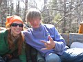
Утром ранним, часов в 11, друзья проснулись, перекусили, чем народ припер, в том числе Ульянкиным тортиком, и отправились назад в родные края. По пути, открыли купальный сезон в Снежной реке, и прокатились в кабриолете «Газель». Затем сели в лимузин «Улан-Уде - Слюдянка» и разъехались по домам до следующих приключений.
Вот и сказочки конец, а кто дочитал – просто МОЛОДЕЦ!
МАЙ 2008
Сказочница Марина Сдредами :)
Эти и другие фотографии с комментариями
смотрите здесь ...